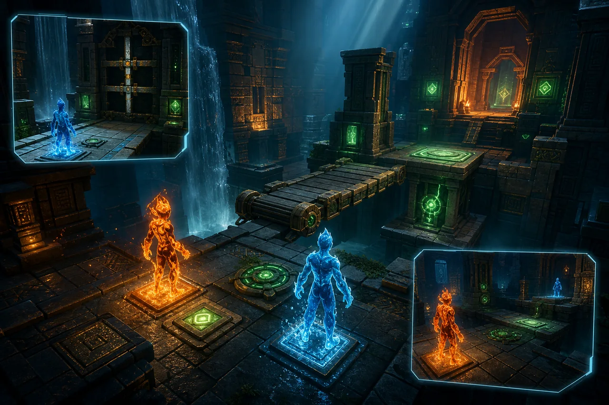

3D CO-OP SPATIAL SYSTEMS
元素人：3D 协作系统
从角色构建到多视角相机的立体协作解谜专题
01C
元素人 3D 模式不是把 2D 关卡拉成立体背景，而是重新处理角色构建、空间交互、协作信息可见性和网络状态同步。双元素角色需要在高低差、遮挡、移动平台和分离路线中保持可控；多视角相机则把“我看不见队友在做什么”变成可设计、可切换的协作信息。
- 我的职责
- 3D 角色实现 / 相机系统 / 空间交互 / 联机同步
- 技术栈
- Godot 3D / GDScript / AnimationTree / Camera System / WebRTC / P2P / Physics
THE CHALLENGE
空间越自由，
协作信息越容易失焦。
3D 协作把 2D 中不存在的问题集中带来：角色骨骼与动画、坡面和落地判定、可移动物理对象、视线遮挡，以及同一名玩家在不同任务阶段所需的完全不同观察角度。若镜头只追随角色，队友、开关和路径很容易失去共同语境；若物理状态两端各自计算，机关又会迅速发生分歧。
THE RESPONSE
把相机变成第二套协作语言。
围绕可读性设计 3D 系统：角色以统一状态机驱动模型、骨骼、动画与元素特效；关键机关和可移动对象使用明确的交互权威；相机在跟随、协作总览、机关观察与队友焦点之间平滑切换，并提供局部辅助视角。这样玩家既能控制自己的角色，也能在需要时获得队友任务与空间关系的有效信息。
⌁从角色脚下，
一直设计到镜头之外。
Character Build
模型、骨骼、动画状态机与水火元素表现共享同一角色状态
3D Locomotion
地面、坡面、跳跃、空中控制、平台附着和碰撞边界
Puzzle Authority
机关与动态物体由明确权威裁决，避免联机双方各自模拟
Camera Director
跟随、总览、机关、队友焦点四类观察意图的平滑切换
Co-op Visibility
遮挡透视、队友轮廓、目标高亮和局部辅助视角
Network Motion
位置、朝向、动作和交互分频同步，兼顾实时性与一致性
03 / FOCUS POINTS
七个观察焦点
每一个工程判断，都在回答“玩家此刻需要看见什么”。- 01
3D 人物模型、骨骼、动画状态机与元素特效构建
- 02
地面检测、跳跃、坡面、空中控制和移动平台交互
- 03
压力板、升降台、旋转结构与可推动物体的空间机关
- 04
位置、朝向、动画、交互和机关状态的分层 P2P 同步
- 05
跟随、协作总览、机关观察与队友焦点多视角相机
- 06
遮挡处理、队友轮廓和关键机关提示，提升双人信息可见性
- 07
3D 碰撞、特效、网络更新与渲染性能的平衡
后续演进 · 以下为路线图，具体阶段以项目说明为准。
景深不是一次完成的。
先让角色和空间机关在 3D 中协作成立
- 双角色 3D 移动与动画
- 压力板、升降台和移动桥
- P2P 位置 / 朝向 / 交互同步
- 基础跟随与协作总览相机
让玩家在复杂空间里始终知道彼此在做什么
- 机关观察与队友焦点相机
- 遮挡处理与可见性提示
- 动态物体权威与状态恢复
- 性能、网络更新频率与镜头过渡优化
DESIGN PRINCIPLES
3D 相机不是单纯的视觉装饰，而是双人协作的信息分发系统。
角色、机关和物理对象的网络权威必须明确，不能依赖两端巧合地算出同一个结果。
2D / 3D 可替换的是呈现与空间交互，不可分裂的是元素规则、关卡状态与协作目标。
任何镜头切换都服务于任务理解：玩家应知道自己、队友、目标和下一步路径之间的关系。